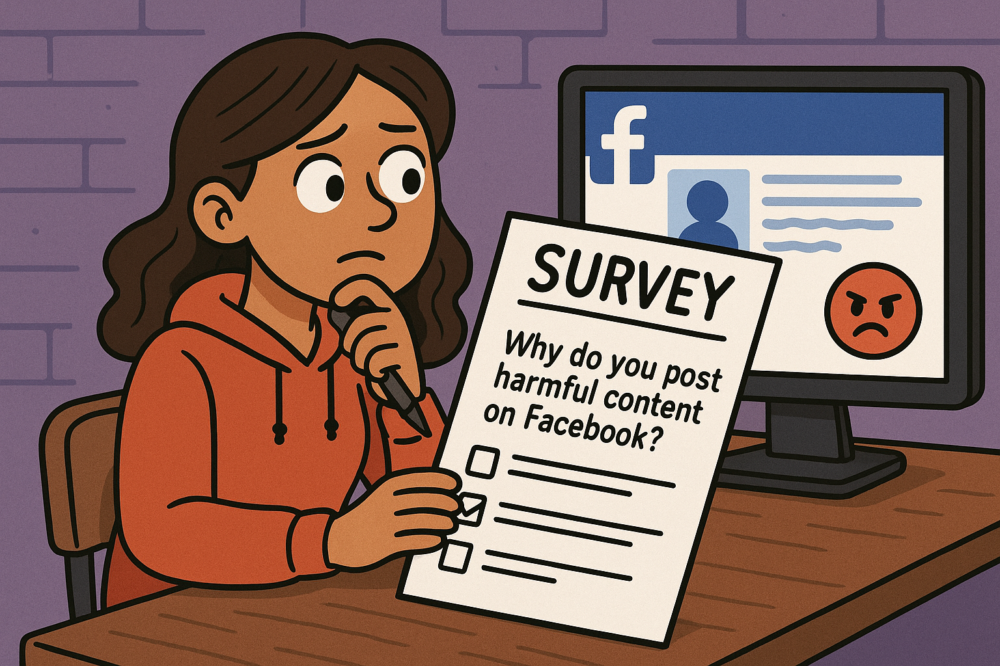

Understanding Motivations Behind Harmful Content
Role: Quantitative UX Research Intern at Meta (Integrity Team)
Methods: Literature review, survey design & execution, quantitative analysis
Impact: Findings and reusable report informed moderation strategy discussions across product, policy, and engineering teams

Generated by GPT5.
Overview
Harmful content undermines user trust, yet enforcement strategies are often reactive. To improve moderation, the integrity team needed better visibility into why users post harmful content - their motivations, awareness of policies, and social dynamics.
Approach
I co-led the project through two parts:
- Literature review: Synthesized academic and industry research into a practical report that guided survey design and became a reusable reference for moderation teams.
- Survey study: Designed and launched a large-scale survey targeting users flagged for harmful content (de-identified). To ensure rigor, I crafted neutral survey language, balanced closed- and open-ended questions, and collaborated with data scientists on recruitment strategy. For analysis, I used R to conduct descriptive statistics and paired chi-square tests, while thematically coding open-ended responses. I also quickly ramped up on Meta’s internal quant tools for survey deployment and analysis.
Key Insights
- Motivations varied widely: some users sought humor or provocation, while others acted out of frustration or misinformation.
- Insights challenged assumptions that harmful content is always deliberate, influencing how integrity teams think about moderation levers.
Impact
The literature review and survey findings became a
shared resource across integrity and engineering teams. I presented results to PMs, designers, and ML engineers, helping teams reframe assumptions about harmful content and align on moderation strategy.